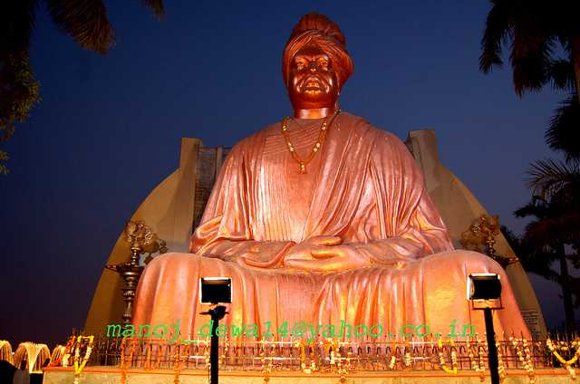

Raipur
Raipur
The capital of Chhattisgarh, Raipur is the largest city in the state. With more than hundreds of steel mills and six steel plants, Raipur is also one of the largest industrial centres of the country. Besides steel, it is also home to the aluminium and coal industries. A primary business and industrial hub, Raipur is even fast emerging in the tourism sector, attracting tourists from across the world. The city is known for its temples, lakes, factories, educational centres as well as the development of Naya Raipur. Naya Raipur is a newly planned city and is about 17km away from the current town. The Swami Vivekananda Airport lies in between Raipur and Naya Raipur facilitating travel.
Raipur has a rich history and until 2000 was a part of Madhya Pradesh. After the formation of the new state of Chhattisgarh, Raipur was made its capital, primarily because of its centralised location. Located in the centre of the plains that are also called the ‘rice bowl of India’, Raipur is surrounded by the districts of Durg and Bemetara. The city is a bustling capital city with a multicultural and multi-religious society. With many festivals, shopping outlets and city landscapes Raipur is also an excellent base for venturing into the surrounding attractions. These include the Barnawapara Wildlife Sanctuary, Dandak Caves, Bilaspur, Chitrakoot Falls, Amarkantak, Bhilai, Kanha National Park and the Sitanadi Wildlife Sanctuary.
Visit Raipur to explore its various natural, wildlife and historical tourist attractions. Chhattisgarh is mostly a forested region. Raipur understands the importance of maintaining its ecological balance, and there is a government proposal under works to construct a micro-forest in the heart of the city. Raipur is also about its various festivals, such as Hareli, Champaran Mela, Pola and Teeja that are celebrated during monsoons. And no city in India is complete without a taste of its unique flavours. Raipur is no different offering its many fascinating cuisines and street food that are an integral part of the city’s cultural and social layout.
Major Tourist Attractions:
- 1. Ghatarani Waterfalls
- 2. Nandan Van Zoo & Safari
- 3. Purkhauti Muktangan
- 4. Swami Vivekanand Sarovar
- 5. Gandhi Udyan Park
- 6. MM Fun City
- 7. Mahant Ghasi Memorial Museum
- 8. Banjari Mata Mandir
- 9. Champaran
- 10. Jatmai Temple
- 11. City Center Mall
- 12. Shahid Veer Narayan Singh International Cricket Stadium
Recommended Tours

Himachal Pradesh

Uttarakhand

Gujarat
Best Time to Visit: The best time to visit Raipur is in the winter months of November to January, when the temperatures range comfortably between 14 degrees Celcius and 28 degrees Celcius. Like all major cities in India, Raipur also faces a tropical wet and dry climate. March to June can become extremely hot, with temperatures soaring up to 48 degrees Celcius. Temperatures remain moderate the rest of the year. The city receives an average rainfall of 1300 millimetres in the monsoon months of June, July, and August. Mild winters can be experienced from November to January, with temperatures sometimes dropping down to 5 degrees celcius.
Watch on YouTube: